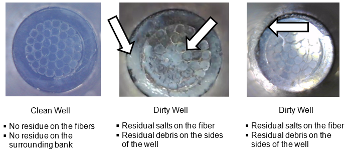
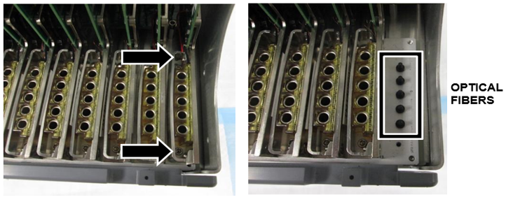

Thermocycler Deep Cleaning Procedure
Background
This procedure should be performed when:
- The RFU background is too high or too low
- There are visibly dirty wells
- There have been Cap / Vial disposal issues reported e.g. cap / vial left in thermocycler.

Parts and Materials Required
- PPE
- DI Water
- Zip lock bags
- Absorbent Pads
- Thermocycler Manual Cleaning Kit
Time Required
- 1hr 30min
Procedure
|
|
Caution— The following cleaning procedure focuses on areas of contamination or areas that should be treated “dirty”. It is important to note that all cleaning materials should be discarded in biohazard bags and be treated as contaminated. The endoscope should also be decontaminated after use. |
If Tube disposal issues have been reported (e.g. cap/vial left in thermocycler), referring to procedure in Safely Extracting Tubes from the Thermocycler
- Teach the Vial Robot to the Thermocycler module. (Time estimate: 15 minutes)
 Verify module is properly mounted prior to using autoteach. Visually inspect TC is retained by shoulder screws. Modules removed for deep clean, use manual teach and check that cap and vial robot is still centered to both dimples as shown below.
Verify module is properly mounted prior to using autoteach. Visually inspect TC is retained by shoulder screws. Modules removed for deep clean, use manual teach and check that cap and vial robot is still centered to both dimples as shown below.- Perform Thermocycler Position Autoteach. Refer to Panther Fusion System Pipettor Teaching.
- Prepare a flat, stable, and clean work surface.
- Place an absorbent pad on this work surface.
- Remove the Thermocycler. Refer to Thermocycler Removal and Replacement.
- Place the Thermocycler on the absorbent pad.
Note: Work surface is to be treated as a dirty work surface.
- Remove the bank(s) with the dirty well(s). Bank 12 is being removed in the example below. Refer to Fusion Thermocycler Bank Removal and Replacement.

- Place the Thermal Module on an absorbent pad for cleaning.
- Clean the Bank
- Wipe both the bottom and top of the bank with a cleaning wipe that has been sprayed with TC cleaning fluid (both are included in the TC cleaning kit).
- Wipe off the top and bottom of the bank again with a cleaning wipe that has been sprayed with DI water to remove any remaining residue.
- Repeat the above steps as necessary to remove any visible salt residue.
- Open the Fusion Solid Waste Drawer. This will be used to dispose of the cleaning material used during this procedure.
- Lightly dab the affected “dirty” optical fiber with the DI Water.
- Next, clean the optical fiber with a lint free wipe [SVC-00722]
- Wipe starting at the outside of the fiber and move gently towards the center of the fiber.
This is so material is not transferred from one well to other components. - Place the used lint free wipe in a zip lock bag.
- Repeat step a - b until the debris is removed.
Confirm the debris is removed by examining the fiber using an endoscope. - Place the gloves used during the cleaning into the zip lock bag with the used lint free wipes.
- Dispose the bag in the Fusion Solid Waste Drawer.
- Wipe starting at the outside of the fiber and move gently towards the center of the fiber.
- Next, lightly dab the affected “dirty” optical fiber with the Optical Cleaner [SVC-00721].
- Clean the optical fiber with a lint free wipe [SVC-00722].
- Wipe starting at the outside of the fiber and move gently towards the center of the fiber.
This is so material is not transferred from one well to other components. - Place the used lint free wipe in a zip lock bag.
- Confirm the debris is removed by examining the fiber using an endoscope.
- Place the gloves used during the cleaning into the zip lock bag with the used lint free wipes.
- Dispose the bag in the Fusion Solid Waste Drawer
- Wipe starting at the outside of the fiber and move gently towards the center of the fiber.
- The corresponding well of the removed thermal module will also need to be cleaned.
- Spray a fiber optic cleaning swab with the fiber optic cleaning solution from the thermal cycler cleaning kit
- Brush the inside of the corresponding well thoroughly with the cleaning swab to remove any debris.
Start from the top of the well and work down so material is not transferred to the outside of the thermocycler bank. - Use the endoscope to see if there is any leftover debris inside the well
- Repeat steps a-c until all debris is removed.
- Reinstall the removed bank(s). Ensure the bank is screwed in tight. Refer to Fusion Thermocycler Bank Removal and Replacement.

Verification
- Pass a background scan (Part A - Thermocycler Scanning and Automatic Cleaning Instructions)
- Pass a PEEK Lid Scan - (Part B - Thermocycler Scanning and Automatic Cleaning Instructions)
- If a well still does not pass a Manual Scan after Deep Cleaning, replace the Thermocycler.
- Decontaminate all tools used (including the Endoscope).
 button at the top of the page to send feedback, comments, or change requests.
button at the top of the page to send feedback, comments, or change requests.